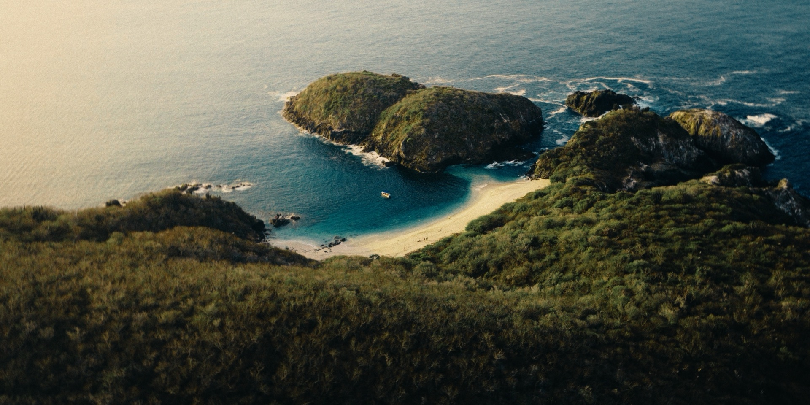
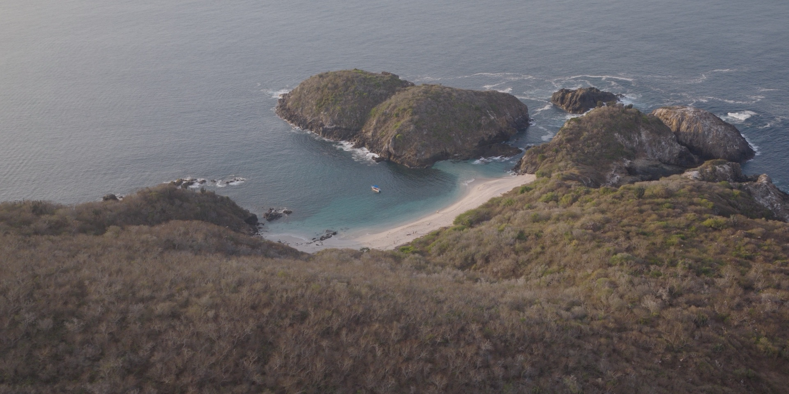
SHOT ON —
COHESIVE COLOR THROUGHOUT YOUR FILM
An in-depth class where I break down, step by step, how I grade my films with SPECTRE.
DRAG TO COMPARE · REC.709 TO FINISHED LOOK


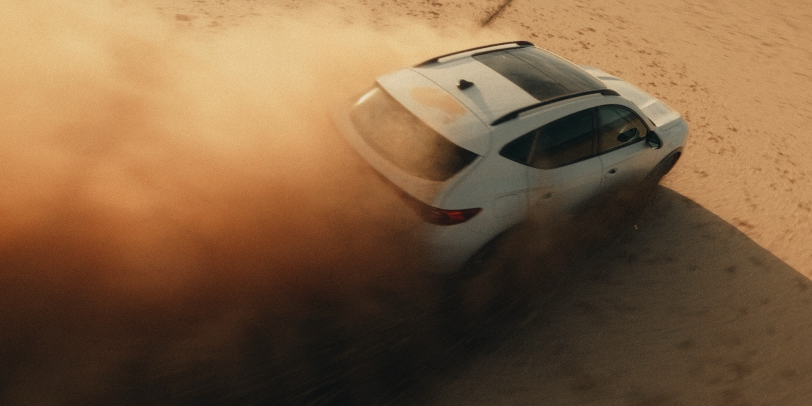
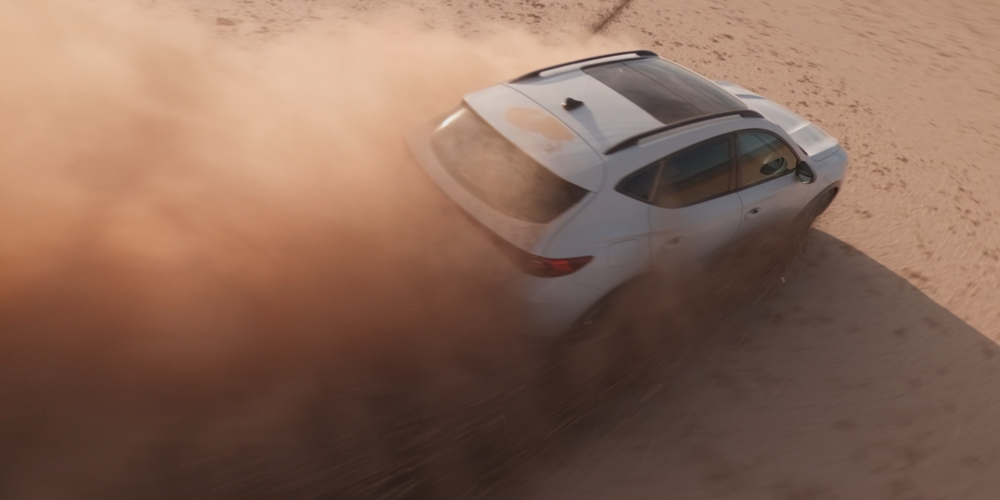
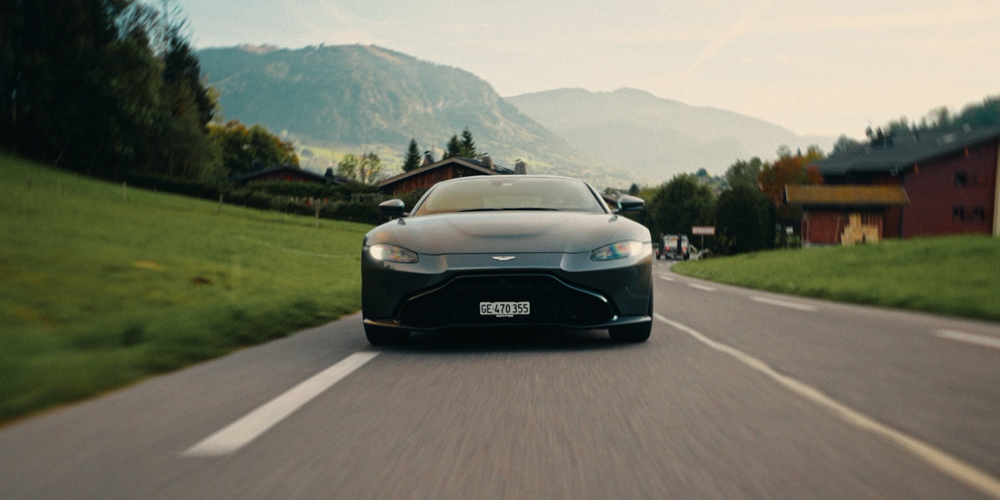
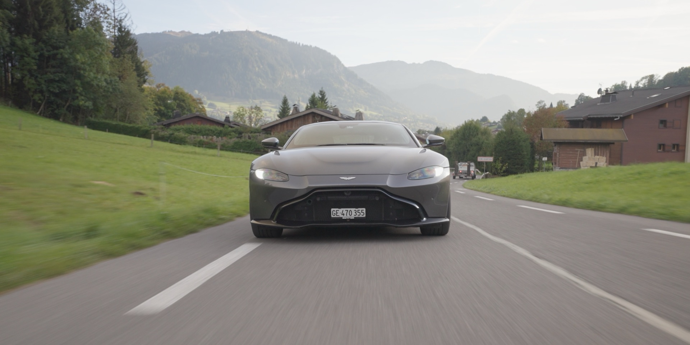
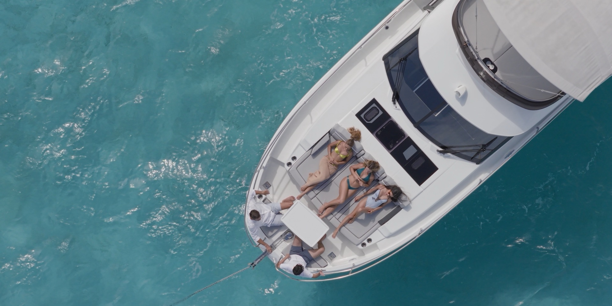
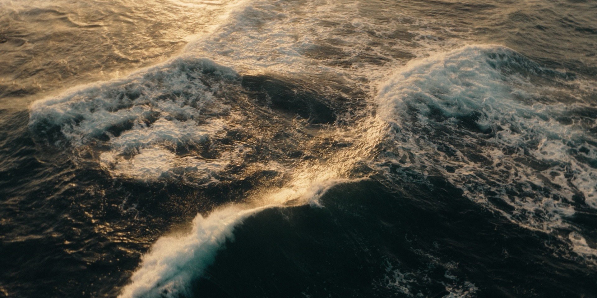
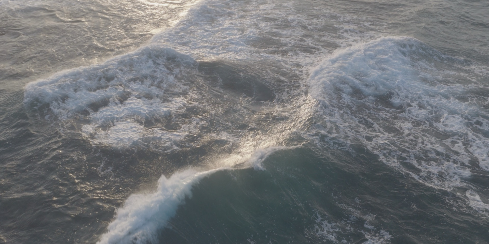
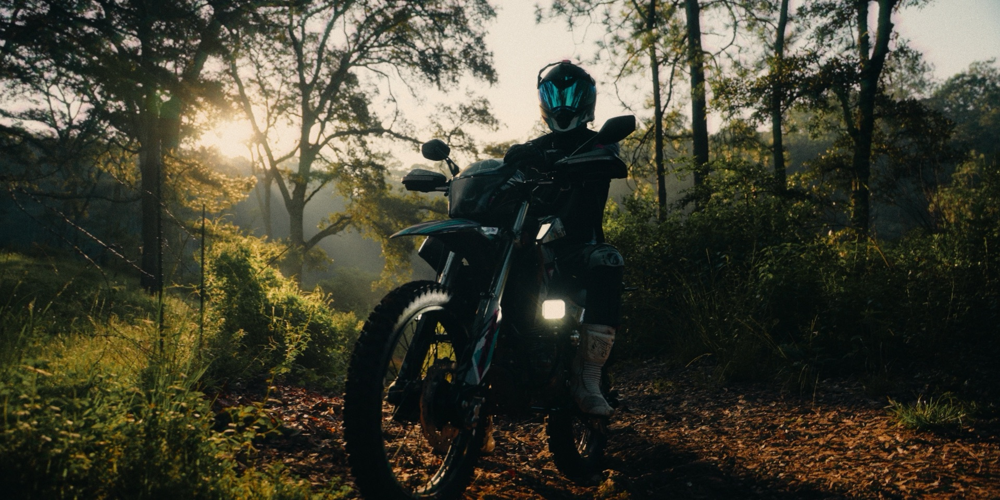
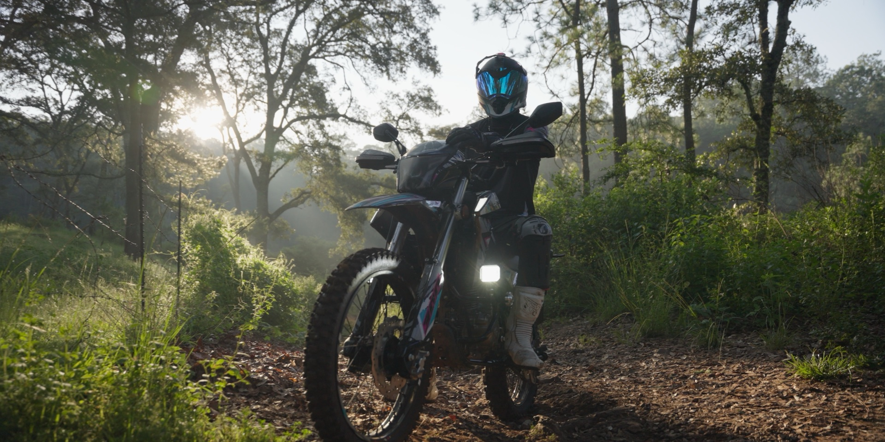
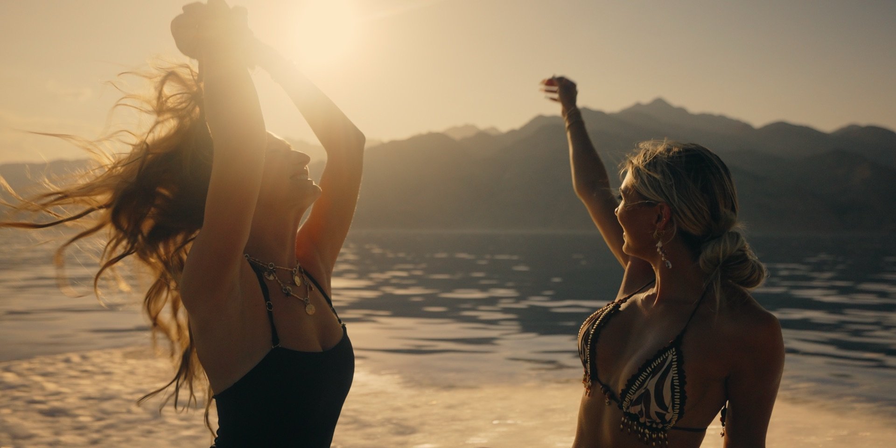
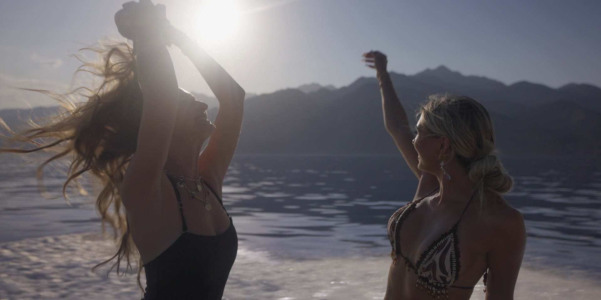
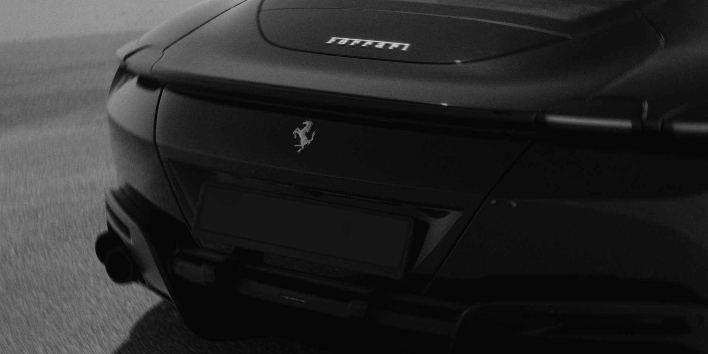
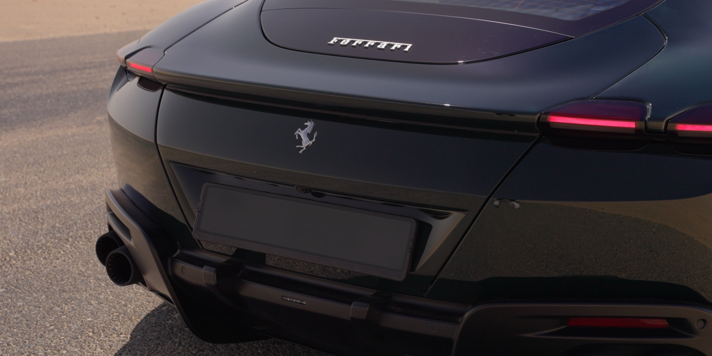
★★★★★
A great starting point
I really like how the colors come out with these LUTs. They give the footage a nice cinematic look without making everything feel too processed. It's a great starting point for my grades and saves me time in post.
★★★★★
The look feels natural
I've tried a lot of different LUTs and what I like about SPECTRE is that the look feels natural. Skin tones still look good and the image has more depth without having to push everything too far. Definitely something I'd use on future projects.
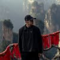
Pablo Esteves@pabloesteves★★★★★
Clean and cinematic
SPECTRE has made my color grading workflow a lot easier. I can get close to the look I'm going for pretty quickly and then make a few adjustments depending on the project. The results feel clean and cinematic without losing the original look of the footage.
★★★★★
Room to make the image my own
What I like most is that the LUTs don't feel overly stylized. The contrast and colors look great while still leaving room to make the image my own. It's a solid starting point when I want to get a good look without spending too much time building everything from scratch.
★★★★★
Balanced and natural
I've been looking for LUTs that give my footage a cinematic look without making it feel overdone. SPECTRE does a really good job with that. The colors feel balanced and the image keeps its natural look, which makes it easy to adapt to different projects.
★★★★★
Cinematic but still natural
I've been using SPECTRE on a few projects and really like how the colors turn out. The look feels cinematic but still natural, which is exactly what I look for in a LUT. It gives me a good starting point without limiting how I want to grade the footage.
The SPECTRE Signature LUT (.cube), five One-Click LUTs that take your Log footage to the finished look in a single click, the complete node tree setup (PowerGrade) for DaVinci Resolve with versions for Sony S-Log, DJI D-Log, Canon C-Log, RED and Rec.709, an in-depth video tutorial on how to use it correctly, and Log practice footage to follow along.
SPECTRE works with any camera. It includes versions made specifically for Sony S-Log, DJI D-Log, Canon C-Log and RED (like the Komodo), plus a Rec.709 version for non-Log footage. With the PowerGrade you can adapt the look to footage from any other camera.
The node tree (PowerGrade) is built for DaVinci Resolve — Free and Studio. The Signature LUT and the One-Click LUT work in any editor that reads .cube files: Premiere Pro, Final Cut Pro, CapCut and more. Not using Resolve? Get the LUTs Only edition.
No advanced experience needed — the tutorial walks you through it step by step. Log gives you the most flexibility, but the workflow also adapts to Rec.709 footage.
Instantly. Right after checkout you get access to the members area, where you can download your files and watch the tutorials. Free updates for this version are included.
A PowerGrade is a saved DaVinci Resolve node tree: the complete grade, node by node, ready to apply to your clips. SPECTRE's PowerGrade is the exact structure I use on my films, so you can see and adjust every step instead of relying on a single LUT.
The Full System includes the LUTs, the PowerGrade node tree for DaVinci Resolve, the in-depth color grading class and Log practice footage. The LUT Pack includes the Signature LUT and One-Click LUTs as .cube files for any editor, like Premiere Pro, Final Cut Pro or CapCut.
Yes. The Full System includes a 50-minute masterclass where I break down, step by step, my exact color grading process with SPECTRE, from the node tree to grading real footage.